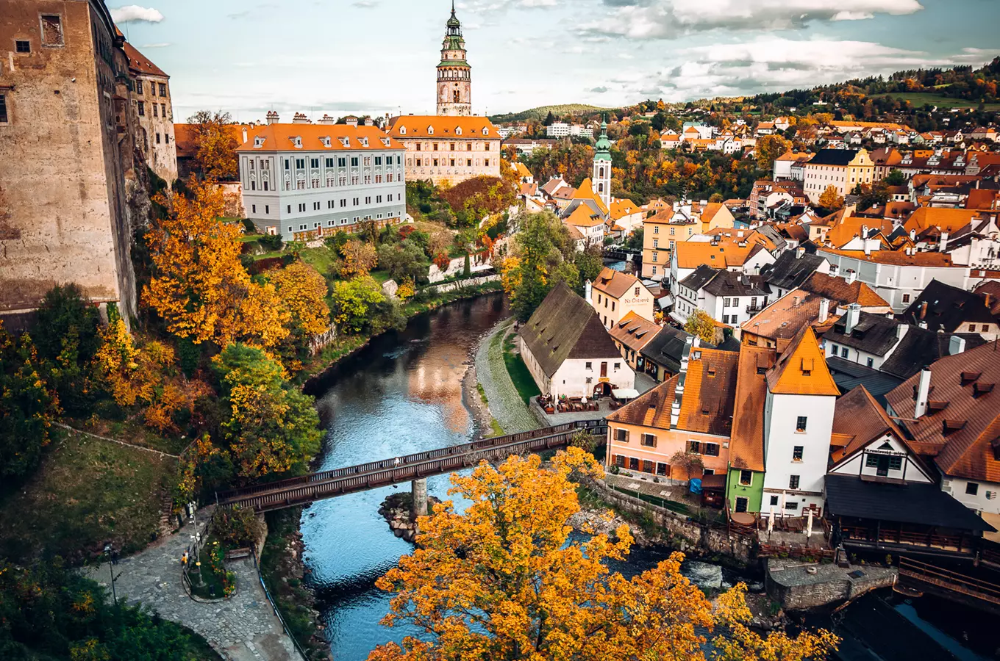
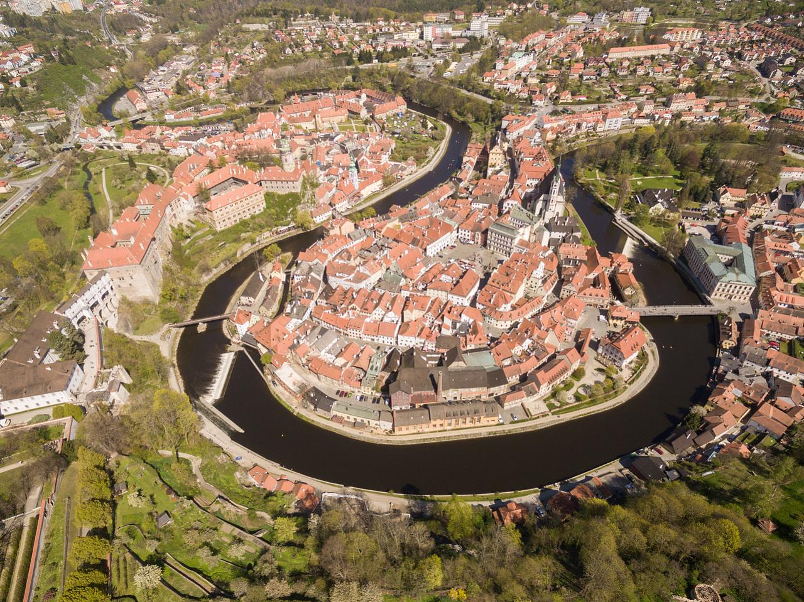
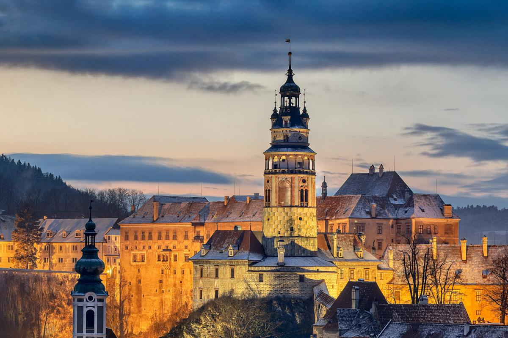
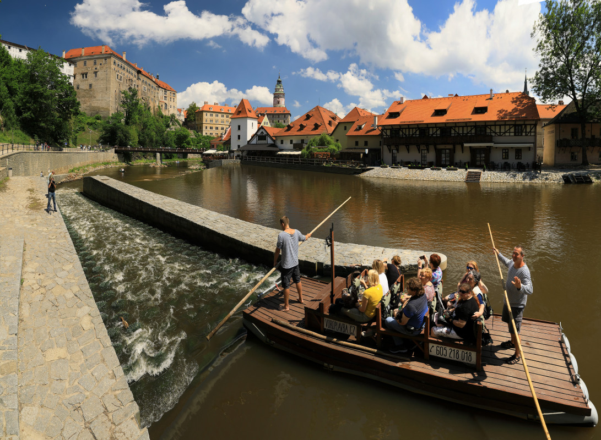

A historic town in South Bohemia, famous for its castle, winding streets and beautiful location on the Vltava River.
Český Krumlov is one of the most beautiful historic towns in Czechia. Its medieval streets, colorful buildings and location along the Vltava River make it a unique place to explore.
The town grew around its impressive castle and has preserved much of its historic character over the centuries.

Český Krumlov Castle is one of the largest castle in Czechia. It overlooks the historic town and the Vltava River and has been an important landmark of the region for centuries.
The castle complex includes historic courtyards, gardens and the famous Baroque theatre. Its distinctive tower has become one of the symbols of Český Krumlov.

The Vltava River flows through the centre of Český Krumlov and is one of the defining features of the town. Its bends surround the historic centre and create many beautiful viewpoints.
Visitors can enjoy walks along the river, watch the boats passing through the town or simply explore the streets and bridges along its banks.

Český krumlov offers much more than its famous castle and historic streets. Visitors can explore the castle gardens, walk across the town's historic bridges and discover viewpoints overlooking the river.
The compact historic centre make it easy to explore many of the townś mosti interesting places on foot.